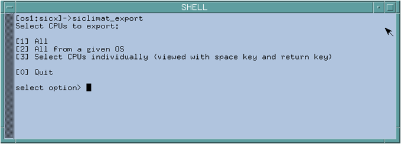

Exporting Data Points
- Log on to the console as the sicx user.
- Run the siclimat_export_repo --datapoints script.

- Select one of the following:
- [1] All: Exports all CPUs from all OSs.
- [2] All from a given OS: Exports all CPUs from a given OS.
- [3] Select CPUs individually: Exports the selected CPUs. Select the CPUs from the list. The list contains all the CPUs engineered in the whole system that have active communication with Siclimat X. When you select more than one CPU, separate the numbers with a space.
- (Optional) Append a tag for the export data or leave it blank to use the default tag.
- The data points, schedules for these data points, text group information, and calender and workday information are exported to the data points subdirectory of the repository. Most schedule data, such as Tagesplan, Werktagsplan, and Wochenplan, are merged to guarantee an overlap free weekly calendar. The Einmalig and Sondertag schedules are exported as they are. Only schedules containing output objects in exported CPUs are considered for the export. Consequently, some schedules may be partially or completely omitted.
- The exporter automatically chooses a default output filename with the following format: sicx_exp_${date}_${time}_${cpu_or_os_list}.xml